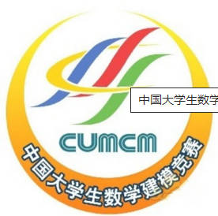

全国大学生数学建模竞赛

全国大学生数学建模竞赛由国家教育部高教司和中国工业与应用数学学会共同主办。竞赛题目一般来源于工程技术和管理科学等方面经过适当简化加工的实际问题，不要求参赛者预先掌握深入的专门知识，只需要学过普通高校的数学课程做成一篇包括模型的假设、建立和求解，计算方法的设计和计算机实现，结果的分析和检验，模型的改进等方面的论文（即答卷）。竞赛评奖以假设的合理性、建模的创造性、结果的正确性和文字表述的清晰程度为主要标准。
全国统一竞赛题目，采取通讯竞赛方式，以相对集中的形式进行；竞赛一般在每年9月初的三天内举行（为保证大家尽量少的耽误课程，所以一般包括周末的两天）；大学生以队为单位参赛，每队3人及1个老师作为辅导，专业不限。
竞赛章程（2008年
第一条 总则
全国大学生数学建模竞赛（以下简称竞赛）是教育部高等教育司和中国工业与应用数学学会共同主办的面向全国大学生的群众性科技活动，目的在于激励学生学习数学的积极性，提高学生建立数学模型和运用计算机技术解决实际问题的综合能力，鼓励广大学生踊跃参加课外科技活动，开拓知识面，培养创造精神及合作意识，推动大学数学教学体系、教学内容和方法的改革。
第二条 竞赛内容
题目有较大的灵活性供参赛者发挥其创造能力。参赛者应根据题目要求，完成一篇包括模型的假设、建立和求解、计算方法的设计和计算机实现、结果的分析和检验、模型的改进等方面的论文（即答卷）。
第三条 竞赛形式、规则和纪律
1．全国统一竞赛题目，采取通讯竞赛方式，以相对集中的形式进行。
2．竞赛每年举办一次，一般在某个周末前后的三天内举行。
3．大学生以队为单位参赛，每队3人（须属于同一所学校），专业不限。竞赛分本科、专科两组进行，本科生参加本科组竞赛，专科生参加专科组竞赛（也可参加本科组竞赛），研究生不得参加。每队可设一名指导教师（或教师组），从事赛前辅导和参赛的组织工作，但在竞赛期间必须回避参赛队员，不得进行指导或参与讨论，否则按违反纪律处理。
4．竞赛期间参赛队员可以使用各种图书资料、计算机和软件，在国际互联网上浏览，但不得与队外任何人（包括在网上）讨论。
5．竞赛开始后，赛题将公布在指定的网址供参赛队下载，参赛队在规定时间内完成答卷，并准时交卷。
6．参赛院校应责成有关职能部门负责竞赛的组织和纪律监督工作，保证本校竞赛的规范性和公正性。
第四条 组织形式
1．竞赛由全国大学生数学建模竞赛组织委员会（以下简称全国组委会）主持，负责每年发动报名、拟定赛题、组织全国优秀答卷的复审和评奖、印制获奖证书、举办全国颁奖仪式等。
2．竞赛分赛区组织进行。原则上一个省（自治区、直辖市）为一个赛区，每个赛区应至少有6所院校的20个队参加。邻近的省可以合并成立一个赛区。每个赛区建立组织委员会（以下简称赛区组委会），负责本赛区的宣传发动及报名、监督竞赛纪律和组织评阅答卷等工作。未成立赛区的各省院校的参赛队可直接向全国组委会报名参赛。
3．设立组织工作优秀奖，表彰在竞赛组织工作中成绩优异或进步突出的赛区组委会，以参赛校数和队数、征题的数量和质量、无违纪现象、评阅工作的质量、结合本赛区具体情况创造性地开展工作以及与全国组委会的配合等为主要标准。
第五条 评奖办法
1．各赛区组委会聘请专家组成评阅委员会，评选本赛区的一等、二等奖（也可增设三等奖），获奖比例一般不超过三分之一，其余凡完成合格答卷者可获得成功参赛证书。
2．各赛区组委会按全国组委会规定的数量将本赛区的优秀答卷送全国组委会。全国组委会聘请专家组成全国评阅委员会，按统一标准从各赛区送交的优秀答卷中评选出全国一等、二等奖。
3．全国与各赛区的一、二等奖均颁发获奖证书。
4．对违反竞赛规则的参赛队，一经发现，取消参赛资格，成绩无效。对所在院校要予以警告、通报，直至取消该校下一年度参赛资格。对违反评奖工作规定的赛区，全国组委会不承认其评奖结果。
第六条 异议期制度
1．全国（或各赛区）获奖名单公布之日起的两个星期内，任何个人和单位可以提出异议，由全国组委会（或各赛区组委会）负责受理。
2．受理异议的重点是违反竞赛章程的行为，包括竞赛期间教师参与、队员与他人讨论，不公正的评阅等。对于要求将答卷复评以提高获奖等级的申诉，原则上不予受理，特殊情况可先经各赛区组委会审核后，由各赛区组委会报全国组委会核查。
3．异议须以书面形式提出。个人提出的异议，须写明本人的真实姓名、工作单位、通信地址（包括联系电话或电子邮件地址等），并有本人的亲笔签名；单位提出的异议，须写明联系人的姓名、通信地址（包括联系电话或电子邮件地址等），并加盖公章。全国组委会及各赛区组委会对提出异议的个人或单位给予保密。
4．与受理异议有关的学校管理部门，有责任协助全国组委会及各赛区组委会对异议进行调查，并提出处理意见。全国组委会或各赛区组委会应在异议期结束后两个月内向申诉人答复处理结果。
第七条 经费
1．参赛队所在学校向所在赛区组委会交纳参赛费。
2．赛区组委会向全国组委会交纳一定数额的经费。
3．各级教育管理部门的资助。
4．社会各界的资助。
第八条 解释与修改
本章程从2008年开始执行，其解释和修改权属于全国组委会。
美国大学生数学建模竞赛
美国大学生数学建模竞赛（含交叉学科竞赛）是由美国自然科学基金协会和美国数学与数学应用协会共同主办，美国运筹学学会、工业与应用数学学会、数学学会等多家国际机构协办的唯一一项国际性建模竞赛。竞赛要求3个以下本科未毕业学生在4天时间内用数学建模及其他知识解决一个具体的社会工程问题，用英语提交论文。
张凤豪---202052340120软件工程一班